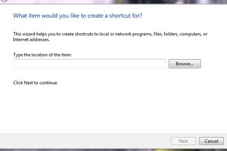

How to create an icon in your Windows desktop to run an R script (or shiny App in this example)
Right click on the desktop and select New -> shortcut

Attention, in the figure before, the location here is actually the R command that you want to execute when double clicking your shortcut, for example
R –e “shiny::runApp(launch.browser=TRUE)”
Then, type a name for the shortcut
ThirdVersion
Right click on the icon, then select properties,
Under the line Start in, type the location of your Rscript (or shiny app), for example
“E:\Google Drive\Data Specialization JHU\CapstoneProject\en_US\ThirdVersion"

Important Note: make sure that in your Path environmental variable (system), the R bin executable is listed, like here in this figure. Also remember that the corresponding R version that is pointed to must have libraries used in your R script.